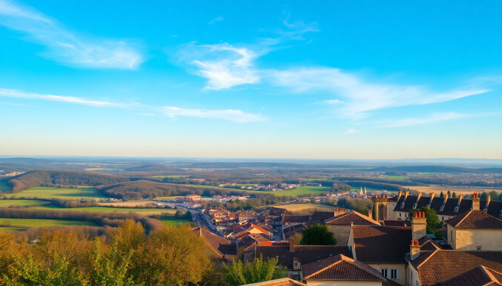

7 Days in France: Paris, Loire Castles & Provence

I spent a week racing through three iconic regions of France, and here’s what actually worked. This itinerary is tight—you’ll move every two days—but it hits Paris highlights, Loire Valley castles, and Provençal hill towns without feeling like a death march. I’ll tell you where I’d skip, where I’d linger, and exactly how to connect the dots by train.
How do you get from Paris to the Loire Valley in one morning?
Take the TGV from Paris Montparnasse to Saint-Pierre-des-Corps station (Tours). The ride is just over an hour. We booked tickets on SNCF Connect two weeks ahead and paid €29 per person. Arriving in Tours by 9:30 a.m. gave us a full day for châteaux. Rent a car at the station—I used Sixt and it cost €45 for 24 hours. Driving is essential here because the castles are scattered across farmland.
We hit Château de Chenonceau first (30 minutes south). It’s the one that spans a river, and it’s genuinely stunning, not just a photo op. Then we drove 20 minutes to Château de Cheverny for a quieter, less crowded experience. Cheverny’s interior is still furnished with original family pieces, which felt more personal than the empty Versailles-style halls.
- Château de Chenonceau – arrive by 10 a.m. to beat tour buses
- Château de Cheverny – smaller, cheaper (€13), and dogs are allowed in the park
- Lunch at L’Étape Gourmande in Chenonceaux village – €22 lunch menu, excellent goat cheese salad
- Skip Château de Chambord unless you love scaffolding – it’s perpetually under renovation
Where should you stay in the Loire Valley for one night?
We booked Hôtel de la Côte d’Argent in Amboise, a 15-minute walk from the royal castle. It’s a three-star, no frills, but the rooms overlook the Loire River and parking is free. Breakfast was €12 with fresh croissants and decent coffee. Amboise itself is a better base than Tours—quieter, prettier, and you can walk to Le Clos Lucé, Leonardo da Vinci’s last home.
If you want something more upscale, Domaine de la Tortinière outside Tours is a château hotel with a pool, but it’s €250+ a night. I’d rather spend that money on dinner.
- Hôtel de la Côte d’Argent – river view rooms, free parking, €110/night
- Le Clos Lucé – da Vinci’s house, €17.50, open until 7 p.m.
- Dinner at L’Épicerie in Amboise – casual, €15 for a plate of charcuterie and local wine
What’s the fastest way to get from the Loire Valley to Provence?
You don’t drive. We returned the rental car at Saint-Pierre-des-Corps and took the TGV direct to Avignon TGV station. It’s about 3 hours and 15 minutes. Book a morning train—we left at 8:30 a.m. and arrived in Avignon by 11:45. From Avignon TGV, take the shuttle bus (€1.50) to Avignon Centre. The whole transfer is painless.
Once in Provence, you need a car again. We rented from Europcar at Avignon Centre station. The key is picking a base town and driving out each day. We stayed in Arles instead of Avignon because it’s less crowded and closer to the Camargue.
- TGV from Saint-Pierre-des-Corps to Avignon TGV – €39 if booked early
- Shuttle bus Avignon TGV to Centre – runs every 15 minutes
- Europcar Avignon Centre – €50/day for a small manual
Which Provençal towns are worth the drive and which are tourist traps?
Arles is underrated. The Roman amphitheater is still used for bullfights, and the streets have a raw, lived-in feel. Van Gogh painted here, and you can follow a walking trail with placards showing where he set up his easel. We spent an afternoon at Les Alyscamps, a Roman necropolis turned tree-lined promenade. Free, no crowds.
Gordes is the postcard hill town you’ve seen on Instagram. It’s beautiful but choked with selfie sticks by 11 a.m. Go at 8 a.m. or skip it for Roussillon, which has ochre cliffs and far fewer tour buses. The Sentier des Ocres trail (€2.50) winds through orange and red rock formations that look fake in photos.
L’Isle-sur-la-Sorgue is worth a half-day for the Sunday market. Antique dealers set up along the river, and you can buy lavender honey for €5. Avoid the main square restaurants—overpriced. We ate at Le Jardin du Quai, a 10-minute walk from the market, for €18 three-course lunch.
- Arles Roman Amphitheater – €9, open until 6 p.m.
- Roussillon ochre trail – €2.50, 30-minute loop
- L’Isle-sur-la-Sorgue market – Sundays only, arrive by 9 a.m.
- Skip Pont du Gard unless you’re a Roman aqueduct nerd – it’s €9.50 to walk a bridge
Is Avignon worth visiting for a day?
Yes, but only for the Palais des Papes. It’s the largest Gothic palace in Europe, and the audio guide (€15.50) actually tells you about medieval politics, not just dates. The square in front is a tourist trap—€9 for a soda. Walk five minutes to Rue des Teinturiers, a narrow street with water wheels and small bistros. We had lunch at Le Bercail for €14 plat du jour.
The famous Pont d’Avignon is a letdown. It’s a half-bridge that stops mid-river, and you pay €5 to walk on it. Skip it and see it from the riverbank for free.
- Palais des Papes – 2 hours minimum
- Rue des Teinturiers – best for cheap lunch and local wine
- Pont d’Avignon – skip, view from the free park next to it
What’s the best way to see lavender fields in July?
The lavender blooms from mid-June to late July, with peak around July 10–20. Drive the Plateau de Valensole east of Avignon. It’s about 90 minutes from Arles. The fields are endless, and you can pull over anywhere—no need to pay for a “lavender farm” tour. We stopped at Château du Bois for a photo and bought a bottle of lavender oil for €8.
Don’t bother with Abbaye de Sénanque near Gordes. The lavender there is a small patch planted for tourists, and you can’t enter the abbey without a guided tour. The real spectacle is Valensole.
- Plateau de Valensole – free, best light at 7 p.m.
- Château du Bois – sells lavender products, no entrance fee
- Drive time from Arles – 1.5 hours each way
FAQ
Is this itinerary too rushed for a first-time visitor? Yes, if you hate moving hotels. You’ll sleep in Paris (2 nights), Amboise (1 night), and Arles (3 nights). That’s three check-ins in seven days. If you prefer one base, skip the Loire Valley and do Paris + Provence by TGV in 2.5 hours.
What’s the best month for this route? June or September. July is peak lavender but also peak crowds and heat. We went in late June and had 80°F days without the August crush. Paris was manageable, Provence was busy but not unbearable.
Do I need to book trains in advance? Yes, for the TGV. Walk-up fares are €80+. Book on SNCF Connect at least two weeks out for €29–€39. Regional trains (like Avignon to Arles) are fine to buy same-day for €8.
Conclusion
- Paris is worth two days max—hit the Louvre early, skip the Eiffel Tower climb, eat in Le Marais.
- Loire Valley needs exactly one day and one night—Chenonceau and Cheverny are the best castles.
- Provence deserves three days—base in Arles, drive Valensole for lavender, skip Gordes.
- Trains between regions are fast and cheap if booked ahead; rent cars locally.
- Don’t overplan meals—the €14 plat du jour is almost always better than the €35 tourist menu.